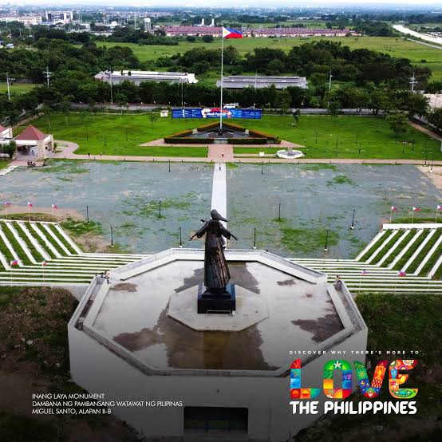

🇵🇭 Imus Heritage Park 🇵🇭Where the Philippine flag was first raised in victory |
| 🏠 Home | 📜 History | 🗺️ Sights and Visiting |
|
🎵 Tap play for music |
| 👋 Welcome |
|---|
|
 |
|
Imus Heritage Park is a memorial park in Barangay Alapan 2-A, in the city of Imus, Cavite, Philippines. It is built at the place traditionally identified as the battlefield of the Battle of Alapan, fought on May 28, 1898. That battle was the first big military victory of General Emilio Aguinaldo after he came home from exile in Hong Kong, and it is remembered as the day the Philippine flag was first unfurled in triumph. 🚩 Because of this history, Imus is nicknamed the "Flag Capital of the Philippines." Every year, the National Flag Days celebration, which runs from May 28 to June 12, opens at this very park. The park is easy to spot from far away because of its very tall flagpole, and it also has a flag shrine, a sanctum for old revolutionary flags, an amphitheater, and a giant statue called Inang Laya. |
| 📌 Quick Facts | |
|---|---|
| 🏞️ Name | Imus Heritage Park (also called Imus National Heritage Park) |
| 📍 Location | Barangay Alapan 2-A, Imus, Cavite, Philippines |
| 🌳 Type | Memorial park |
| 📏 Size | About 5 hectares (about 12 acres) |
| 🚩 Flagpole height | About 35 meters (115 feet) |
| 🏛️ Designation | National Historic Landmark (1993) |
| 🎉 Inaugurated | May 28, 2014 |
| ⚔️ Commemorates | The Battle of Alapan, May 28, 1898 |
| 📅 Big yearly event | National Flag Days, May 28 to June 12 |
| 🗽 Newest landmark | Inang Laya statue, inaugurated May 28, 2023 |
| 🏙️ About the City of Imus | |
|---|---|
| 🏛️ Official name | City of Imus (Lungsod ng Imus) |
| 🗺️ Province and region | Cavite, CALABARZON |
| ⭐ Role | De jure capital of the province of Cavite |
| 🚩 Nickname | Flag Capital of the Philippines |
| 📅 Founded | 1795 |
| 🎉 Became a city | June 30, 2012 (by plebiscite) |
| 👥 Population | 496,794 (2020 census) |
| 📏 Distance from Manila | Roughly 20 kilometers south of Metro Manila |
| ⛪ Faith | Seat of the Roman Catholic Diocese of Imus; patron saint is Our Lady of the Pillar |
| ⭐ Why Visit? | |
|---|---|
| 🇵🇭 Birthplace of a symbol | This is where the flag we know today was first raised after a battle victory. |
| 🚩 A very tall flagpole | The pole once stood at Rizal Park in Manila before it was moved here. |
| 🗽 Big public art | The 10-meter Inang Laya statue stands at the center of the amphitheater. |
| 📚 Learn history on site | The markers, shrine, and flag sanctum explain the story of the revolution. |
| 🎭 Flag Day events | Ceremonies and reenactments are held here during National Flag Days. |
| 🧭 Explore This Site |
|---|
| 📜 History - the Battle of Alapan, the flag, the people, and a full timeline |
| 🗺️ Sights and Visiting - what to see, how to get there, nearby places, and FAQs |
| Next page: History ➡️ |